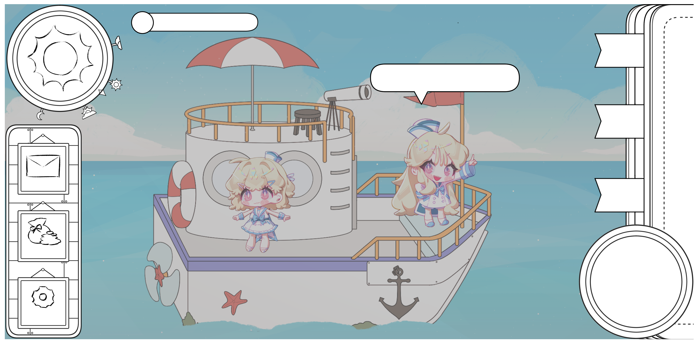

요리 채널도 자주 보고 베이킹에도 관심이 있던지라 자연스럽게 특기가 되었습니다!


1851026 한예솔의 자기소개 홈페이지 입니다!
| 저의 취미는 소설 읽기, 게임, 영화 감상입니다. |
| 소설 장르는 다양하게 읽는 편이며, 게임은 주로 rpg게임을 하는 편입니다. 영화는 넷플릭스에서 자주 감상하며 최근 본 영화는 "악마는 프라다를 입니다." 입니다! |
| ▲넷플릭스 바로가기 |
| 특기는 요리, 베이킹입니다. |
| 어렸을 때부터 자주 먹고 싶은 음식이 있으면 만들어먹었고 요리 채널도 자주 보고 베이킹에도 관심이 있던지라 자연스럽게 특기가 되었습니다! |
|
|
| ▲ 위 사진은 제가 만든 푸딩이랑 크레이프 케잌 입니다! |
| 제가 최근에 빠진 것들은 여행 v-log 감상, 유튜브 반려동물 영상입니다. |
| 최근 코로나로 제가 원래 가고자 했던 여행 계획을 다 취소하면서 생긴 취미가 바로 여행 브이로그 시청입니다. 제가 즐겨보고 있는 브이로그 유튜버는 '샒의 삶' 입니다! |
| 유튜브 동물 영상은 사실 최근은 아니지만 최근에 새로 빠진 동물 유튜버가 있어 최근 빠진 것들에 적었습니다! |
| 제가 최근에 빠진 동물 유튜버는 초코푸들인 '속삭이는 몽자' 입니다! |

 ▲ 유튜브 채널 바로가기 |
| 제가 싫어하는 것은 북어입니다. |
| 원래도 별로 안좋아하던 음식이긴 했으나 어렸을 적 안좋은 추억이 남아 더 안먹게 되는 음식입니다. 정말 웬만한 일이 아니고서야 입에 대는 일이 없습니다.ㅠㅠ |
| 요즘 하고 있는 것은 캡스톤 작품 제작 입니다. |
| 이번에 졸업반이 되면서 팀을 짜고 캡스톤 작업을 하게 되었습니다! 처음 하는 작업들이 많아 이모저모 어려운 일들도 많지만 열심히 하고 있습니다! |
|  |